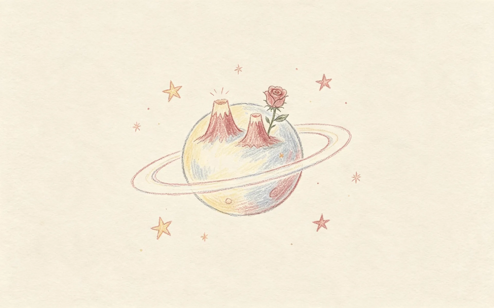
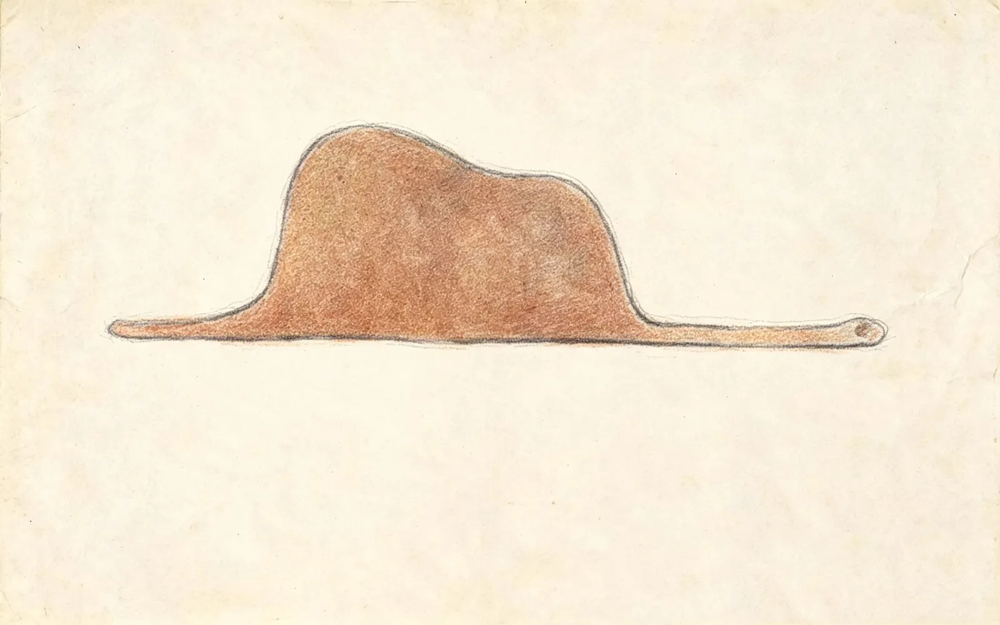
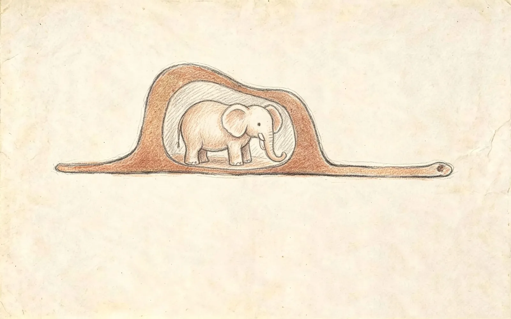
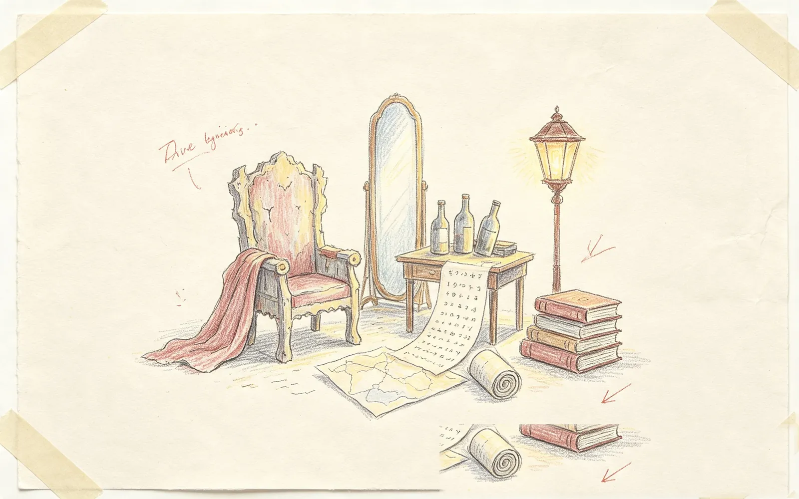
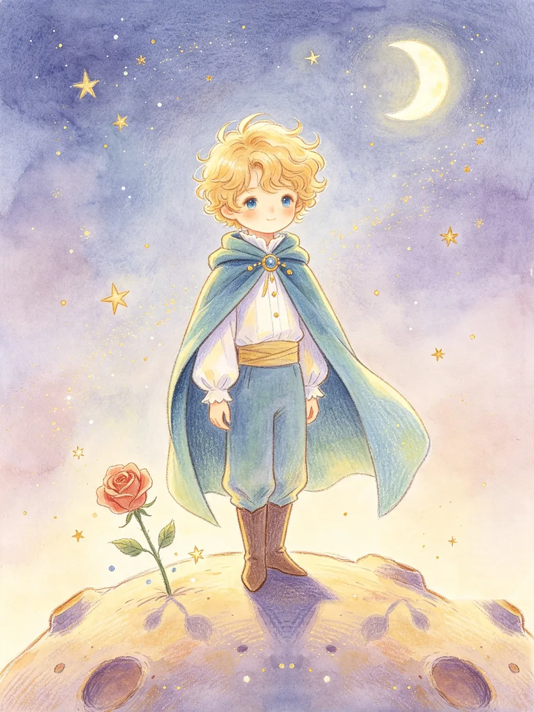
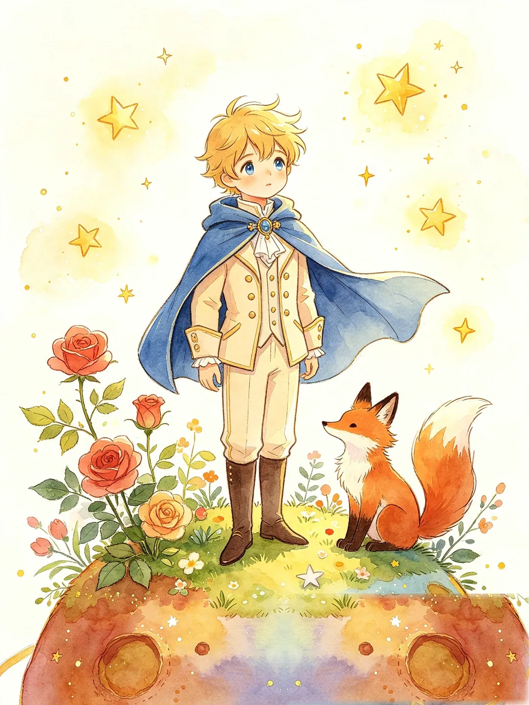
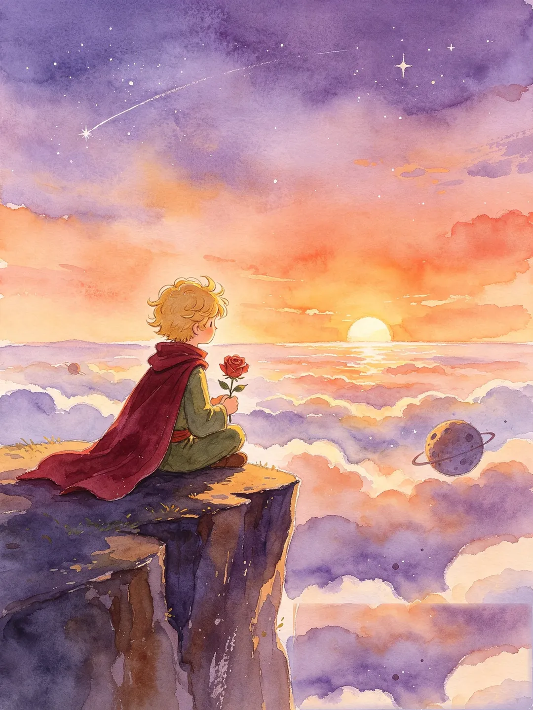
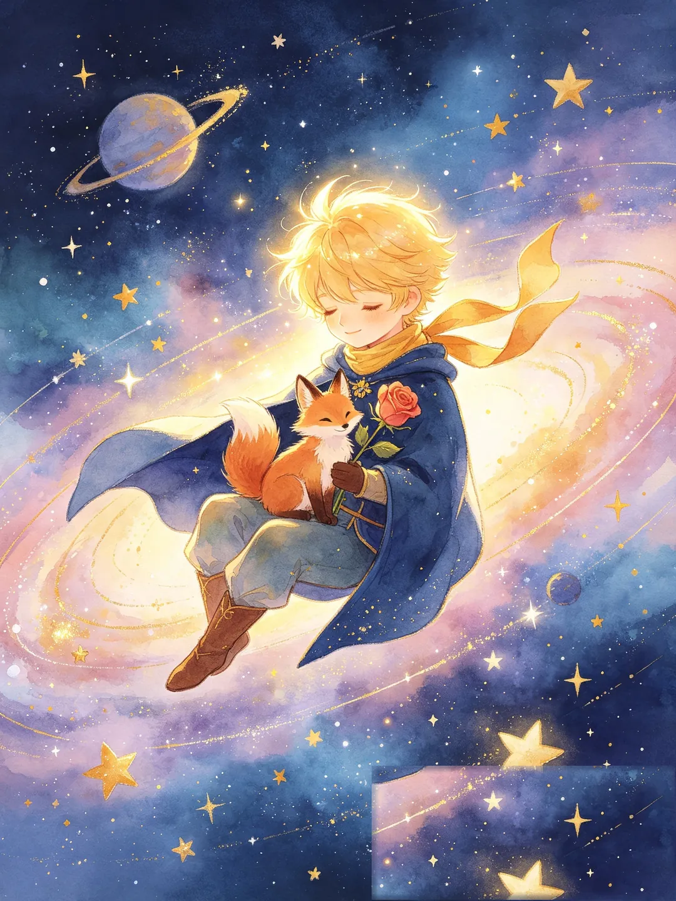

An interactive tale, after Saint-Exupéry
A hat. A desert. A boy no grown-up could see.
Walk back into the story you loved — and finish the page it never wrote.
Enter the Desert

This is a hat.
Look again.
When you were six, you saw it instantly. Then the grown-ups talked you out of it. B612 exists to give that back.
The story
Somewhere over the Sahara an engine falls silent. A pilot wakes beside his broken plane — a thousand miles from the nearest person.
Then he finds it: a door, standing alone among the dunes. It is on no map, and it is very slightly ajar.
Behind it hangs a gallery. In the gallery, six empty frames — six stories he began at six, and never finished.
not on any map!The six
Beyond the door, six little worlds drift in the dark — each one exactly large enough for a single grown-up, and a single delusion.

He rules over the stars — provided no one ever disobeys him.
He waits for applause from an audience that never comes.
He drinks, to forget the shame of drinking.
He counts stars he will never see, because no one counted them first.
He lights and snuffs his lamp sixty times a minute, for a planet that never asked him to.
He has mapped every mountain he has never seen.

he is looking for someoneAnd then
He comes from a planet the size of a house. About flowers, about duty, about leaving — he asks the very biggest questions, and asks them completely seriously.
He has left a rose behind to see the rest of the stars. What he is really looking for is a friend — someone who still remembers that a hat can be a snake.
The fox
On Earth, among a thousand roses that all look alike, the boy will meet a fox — who wants, very politely, to be tamed.
“To tame,” the fox explains, means to establish ties. And what that comes to mean is simple: whatever you give your time to becomes unlike anything else in the world.

“…you will be unique, for me”The rose
There are thousands of roses in the world, and they are all, more or less, the same rose. Yours is different for exactly one reason: the mornings you watered her, the glass globe you set over her on cold nights, the time you gave her.
That is the whole secret. You knew it at six. You know it now.


After the six
The book leaves its ending just out of reach — the way childhood does. So we are building a place where you can walk back in: find the six frames, meet the six grown-ups, and write the seventh page yourself.
all the stars are yours
Free · Runs in your browser · About a minute of prologue before the door